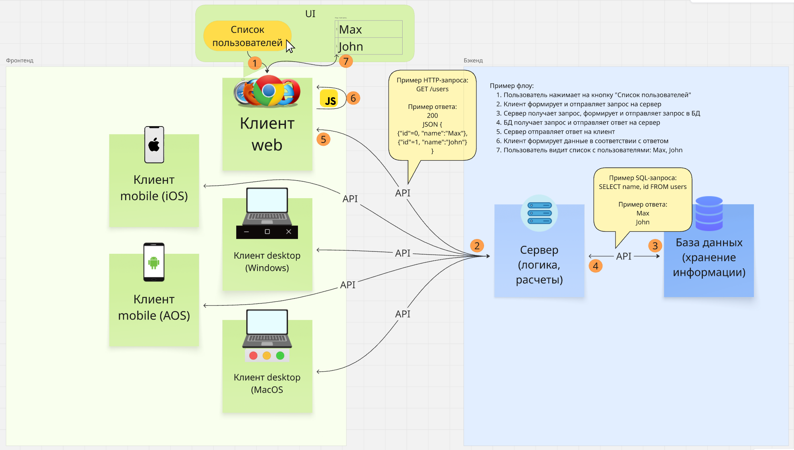
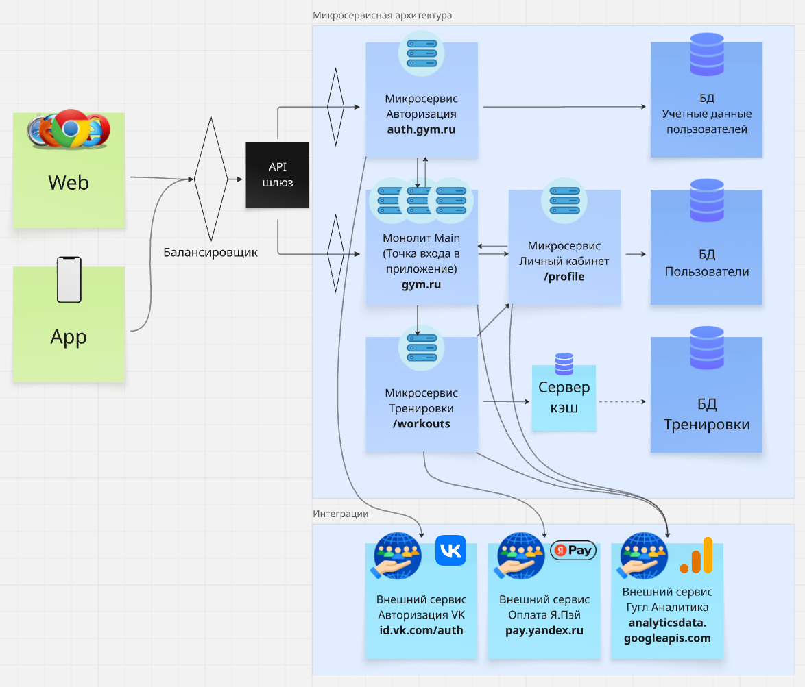

Продвинутая версия урока из вводного модуля. Вернись к уроку 0-4 и бегло пробегись по основным моментам клиент-серверной архитектуры, затем ознакомься со схемой ниже.

Обрати внимание на флоу из семи шагов на схеме: пользователь жмёт кнопку → клиент формирует и отправляет запрос на сервер → сервер идёт в БД → БД отвечает серверу → сервер отвечает клиенту → клиент формирует данные в соответствии с ответом → пользователь видит список.
Переходи к видео и смотри до OSI (до 38 минуты). Можешь конечно посмотреть всё, но не закапывайся.
Как ты заметил, клиент-серверная архитектура в реальности далеко отличается от стандартных «академических» двухзвенных (клиент-сервер) и трехзвенных (клиент-сервер-БД) моделей. Подключается большое количество сторонних компонентов:
А также сама архитектура начинает делиться на два основных типа: монолитная и микросервисная. Сейчас часто встречаются именно микросервисы, поэтому упор делаем на них.
Посмотри видео про монолит и микросервисы, чтобы лучше понимать их роль в клиент-серверной архитектуре. В видео рассказывается про кафку, пока в это не копай, будет в следующих уроках.
Важно: в видео ниже разбирается именно микросервисная архитектура, так как идет связь с несколькими бэкенд-компонентами, один из которых является монолитом.
Это как с JSON, у нас могут быть как все ключи списком в одном объекте: {1, 2, 3, 4}
так и в нескольких: { {1}, {2}, {3, 4, 5}, {6} }
И в данном примере «микросервисного» JSON объект {3, 4, 5} будет монолитом, если рассматривать его обособленно. Но его окружают другие «сервисы», значит, сам по себе он не самостоятелен и является отдельным сервисом, просто крупным.
Из видео выше ты увидел, что компоненты (например, два сервиса) могут общаться друг с другом (обмениваться данными) двумя способами:
– Синхронно. Обычно это REST, стандартизированные HTTP-запросы. Про рест в след уроке.
– Асинхронно. Обычно это очереди сообщений: Kafka, RabbitMQ и другие. То есть через некие посредники, которые могут хранить данные до момента их запроса.
На примере общения людей: если два человека встретились и общаются вживую, это будет синхронное общение: вопрос-ответ, вопрос-ответ, если вопрос не понят или не услышан (например, отвалился по 504 ошибке) — повторный вопрос. Если это переписка в телеграм, это будет асинхронное общение: один написал сообщение, сообщение ушло посреднику (телега), второй зашел когда ему захочется и прочитал это сообщение.
Какими могут быть внешние сервисы (интеграции)? Это могут быть сервисы авторизации (авторизация через Google, VK и тд), сервисы платежей (Paypal, СБП, YooMoney и тд), сервисы аналитики (Яндекс Метрики, Google Analytics). Подробнее про тестирование интеграций (в том числе внешних сервисов) в другом уроке.
